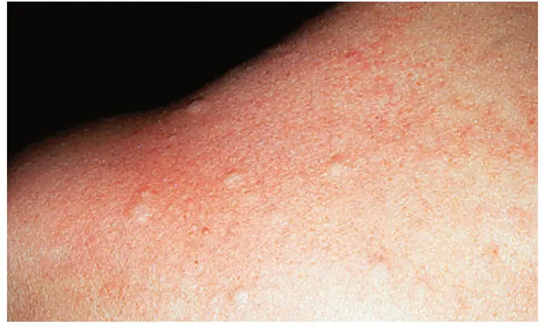

نسخه استخراجشده؛ ترجمه یا تأیید علمی انجام نشده است. وضعیت: captured
خانم ۳۴ سالهای دو ساعت پس از ترمیم دندانش تماس میگیرد. روی ساعد و گردنش کهیر زده و خارش دارد، ولی نفسش راحت است و صدایش عادی. این وضعیت چقدر جدی است؟
بیشتر واکنشهای آلرژیک مطب از نوع I هستند. در نخستین تماس با دارو، بدن فقط حساس میشود و آنتیبادی IgE میسازد که روی ماستسلها مینشیند. در تماس بعدی، ماستسلها هیستامین آزاد میکنند؛ رگها گشاد و نشتپذیر میشوند و روی پوست خارش، قرمزی و کهیر میبینی.
هرچه علائم زودتر پس از تماس شروع شوند، واکنش شدیدتر است. واکنشی که ۶۰ دقیقه یا دیرتر پس از تماس شروع شده، معمولاً پیشرفت نمیکند و تهدیدکنندهی حیات نیست.
واکنش تأخیری نوع IV ماجرای دیگری است: کار لنفوسیت T است، نه آنتیبادی، و ۴۸ تا ۷۲ ساعت پس از تماس ظاهر میشود؛ مثل استوماتیت تماسی به آمالگام، نیکل یا خمیردندان.
کهیر (urticaria) برجستگیهای صاف و قرمز پوست با خارش شدید است. آنژیوادم تورم لایههای عمیقتر است، بیشتر در لب، پلک و زبان؛ معمولاً بیدرد است و رنگ پوست رویش طبیعی میماند.

کهیر بهتنهایی خطرناک نیست، ولی ممکن است نخستین نشانهی آنافیلاکسی باشد. اگر خسخس، گرفتگی صدا، تورم زبان یا گلو، یا افت فشار اضافه شد، دیگر با واکنش خفیف روبهرو نیستی.